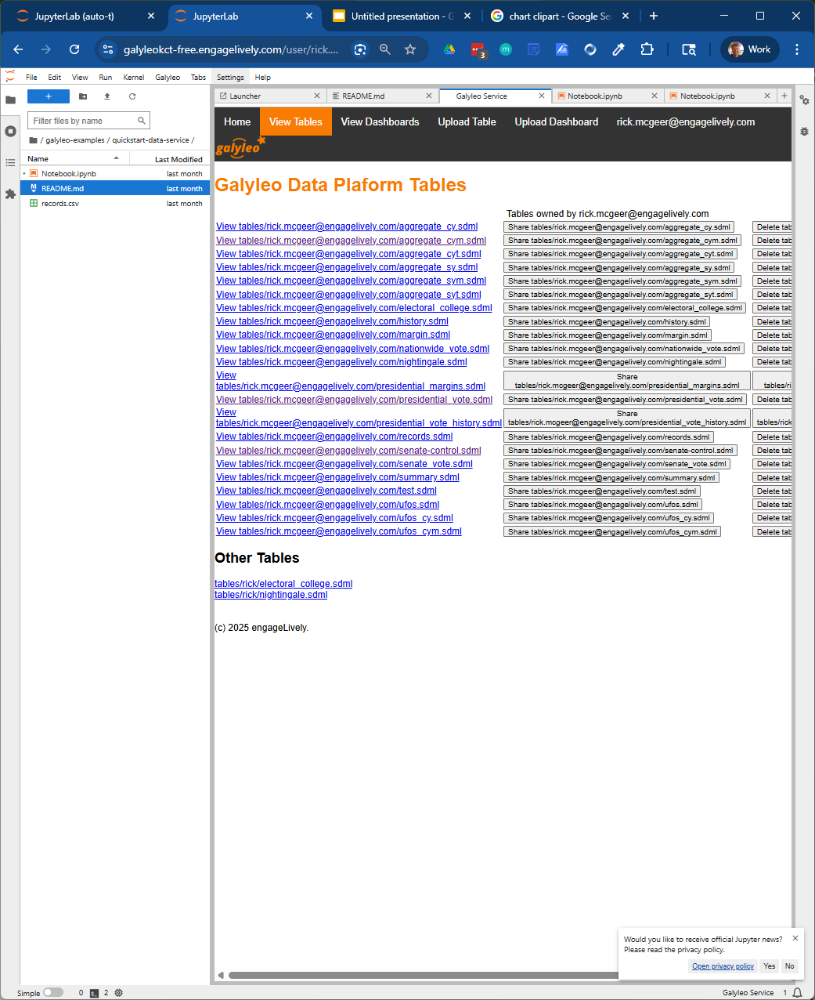
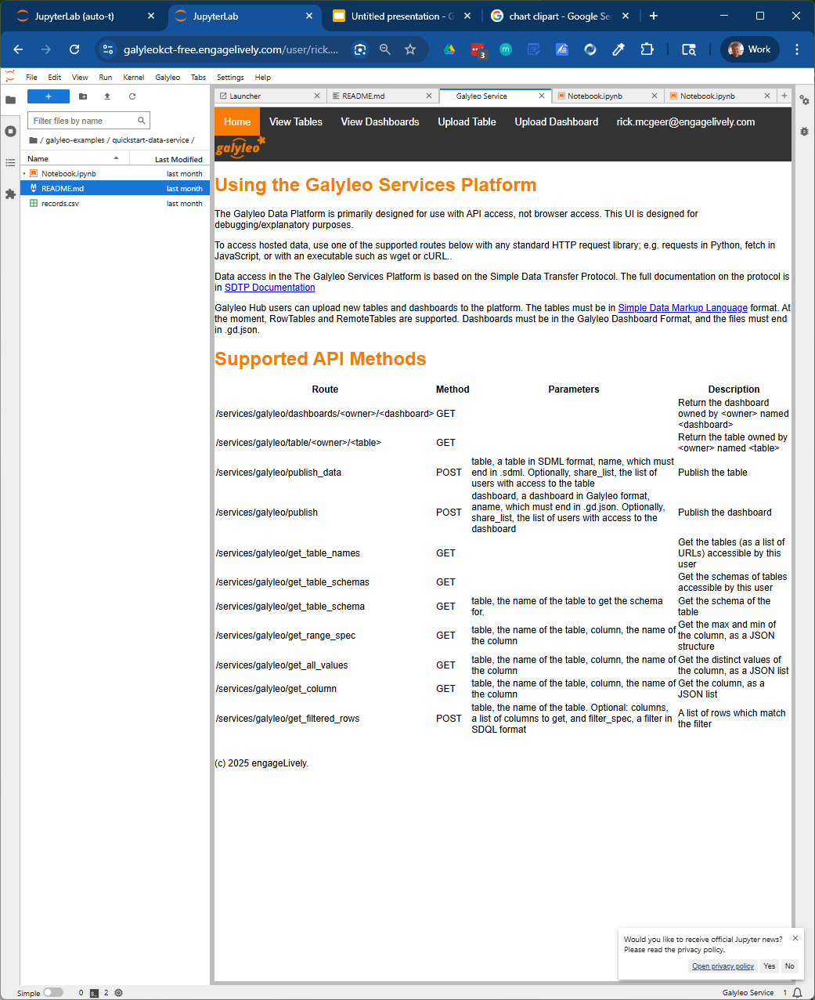

Publishing a Table
Creating a Table
This begins with publishing a data table to the Galyleo service. Construction of a table is done using the Simple Data Markup Language (SDML), which is thoroughly documented at Simple Data Transfer Protocol.
The common case to start is with a RowTable. A RowTable is just an SDML Table with the rows explicitly represented in the table. We start with the table from the last section:
| name | mfr | type | calories | fiber | rating |
|---|---|---|---|---|---|
| 100% Bran | N | C | 70 | 10 | 68.402973 |
| 100% Natural Bran | Q | C | 120 | 2 | 33.983679 |
| All-Bran | K | C | 70 | 9 | 59.425505 |
| All-Bran with Extra Fiber | K | C | 50 | 14 | 93.704912 |
| Almond Delight | R | C | 110 | 1 | 34.384843 |
| Apple Cinnamon Cheerios | G | C | 110 | 1.5 | 29.509541 |
| Apple Jacks | K | C | 110 | 1 | 33.174094 |
| Basic 4 | G | C | 130 | 2 | 37.038562 |
| Bran Chex | R | C | 90 | 4 | 49.120253 |
| Bran Flakes | P | C | 90 | 5 | 53.313813 |
| Cap'n'Crunch | Q | C | 120 | 0 | 18.042851 |
| Cheerios | G | C | 110 | 2 | 50.764999 |
| Cream of Wheat (Quick) | N | H | 100 | 1 | 64.533816 |
| Maypo | A | H | 100 | 0 | 54.850917 |
The table starts with a schema, which gives the names and data types of each column:
[
{"name": "name", "type": "string"},
{"name": "mfr", "type": "string"},
{"name": "type", "type": "string"},
{"name": "calories", "type": "number"},
{"name": "fiber", "type": "number"},
{"name": "rating", "type": "number"}
]
The rows are then explicitly represented in JSON:
[
{"100% Bran", "N ", "C", 70, 10, 68.402973},
{"100% Natural Bran", "Q ", "C", 120, 2, 33.983679},
{"All-Bran", "K ", "C", 70, 9, 59.425505},
{"All-Bran with Extra Fiber", "K ", "C", 50, 14, 93.704912},
{"Almond Delight", "R ", "C", 110, 1, 34.384843},
{"Apple Cinnamon Cheerios", "G ", "C", 110, 1.5, 29.509541},
{"Apple Jacks", "K ", "C", 110, 1, 33.174094},
{"Basic 4", "G ", "C", 130, 2, 37.038562},
{"Bran Chex", "R ", "C", 90, 4, 49.120253},
{"Bran Flakes", "P ", "C", 90, 5, 53.313813},
{"Cap'n'Crunch", "Q ", "C", 120, 0, 18.042851},
{"Cheerios", "G ", "C", 110, 2, 50.764999},
{"Cream of Wheat (Quick)", "N ", "H", 100, 1, 64.533816},
{"Maypo", "A ", "H", 100, 0, 54.850917}
]
The markup form of the table is then, in JSON:
{
"type": "RowTable",
"schema": [
{"name": "name", "type": "string"},
{"name": "mfr", "type": "string"},
{"name": "type", "type": "string"},
{"name": "calories", "type": "number"},
{"name": "fiber", "type": "number"},
{"name": "rating", "type": "number"}
],
"rows": [
{"100% Bran", "N ", "C", 70, 10, 68.402973},
{"100% Natural Bran", "Q ", "C", 120, 2, 33.983679},
{"All-Bran", "K ", "C", 70, 9, 59.425505},
{"All-Bran with Extra Fiber", "K ", "C", 50, 14, 93.704912},
{"Almond Delight", "R ", "C", 110, 1, 34.384843},
{"Apple Cinnamon Cheerios", "G ", "C", 110, 1.5, 29.509541},
{"Apple Jacks", "K ", "C", 110, 1, 33.174094},
{"Basic 4", "G ", "C", 130, 2, 37.038562},
{"Bran Chex", "R ", "C", 90, 4, 49.120253},
{"Bran Flakes", "P ", "C", 90, 5, 53.313813},
{"Cap'n'Crunch", "Q ", "C", 120, 0, 18.042851},
{"Cheerios", "G ", "C", 110, 2, 50.764999},
{"Cream of Wheat (Quick)", "N ", "H", 100, 1, 64.533816},
{"Maypo", "A ", "H", 100, 0, 54.850917}
]
}
Tables can be created through the sdtp library, included with every Galyleo shipment, or by assembling the components and saving them as an SDML file to disk.
Publishing a Table
A table can be published either through the Galyleo Service Web UI or using the Galyleo Service REST API.
Using the Galyleo Service Web UI
Click on the Galyleo menu on Jupyter Lab. This will bring up the Galyleo Services tab:

Click on Upload Table. This will bring up a table uploader:
![Galyleo Upload] (images/upload.png) Choose a file and then click Upload. You will be returned to the Table Viewer in the service, where you will see your uploaded table:

Using the API
The Galyleo Service method publish_data accepts an SDML table in JSON form. In order to use it, create the table using the SDTP library and then get its JSON form:
schema = [
{"name": "name", "type": "string"},
{"name": "mfr", "type": "string"},
{"name": "type", "type": "string"},
{"name": "calories", "type": "number"},
{"name": "fiber", "type": "number"},
{"name": "rating", "type": "number"}
]
rows = [
{"100% Bran", "N ", "C", 70, 10, 68.402973},
{"100% Natural Bran", "Q ", "C", 120, 2, 33.983679},
{"All-Bran", "K ", "C", 70, 9, 59.425505},
{"All-Bran with Extra Fiber", "K ", "C", 50, 14, 93.704912},
{"Almond Delight", "R ", "C", 110, 1, 34.384843},
{"Apple Cinnamon Cheerios", "G ", "C", 110, 1.5, 29.509541},
{"Apple Jacks", "K ", "C", 110, 1, 33.174094},
{"Basic 4", "G ", "C", 130, 2, 37.038562},
{"Bran Chex", "R ", "C", 90, 4, 49.120253},
{"Bran Flakes", "P ", "C", 90, 5, 53.313813},
{"Cap'n'Crunch", "Q ", "C", 120, 0, 18.042851},
{"Cheerios", "G ", "C", 110, 2, 50.764999},
{"Cream of Wheat (Quick)", "N ", "H", 100, 1, 64.533816},
{"Maypo", "A ", "H", 100, 0, 54.850917}
]
from sdtp import RowTable
table = RowTable(schema, rows)
table_as_json = table.to_json()
We can then publish the table as follows:
import sdtp
import os
import requests
HUB_URL = "https://galyleo.engagelively.com"
publish_url = f'{HUB_URL}/services/galyleo/publish_data'
user_token = os.environ["JUPYTERHUB_API_TOKEN"] # Automatically issued to every user
headers = {"Authorization": f"token {user_token}"}
payload = {"name": "cereal.sdml", "table": table_as_json}
response = requests.post(publish_url, headers=headers, payload=payload)
And the table will appear in the list of published tables.